Multi-temporal Sentinel-1 SAR inputs, ground truth labels, model predictions, and spatial error breakdowns (True Positives, False Positives, False Negatives) evaluated on real Kuro Siwo disaster events.
All models trained on 2x Tesla T4 GPUs on identical Kuro Siwo splits with identical augmentations and random seed (1337).
| Architecture | Key Inductive Bias | Mountain Recall | Mountain F1 | Val Recall | Val F1 | Val IoU | ECE (Calib) |
|---|---|---|---|---|---|---|---|
| UNet++ ResNet-50 | Nested Dense Skip Pathways (Zhou et al., 2018) | 87.78% (Evt 492: 92.81%) | 0.8798 (Rank 1) | 79.27% | 0.7792 | 0.6382 | 0.0028 (Best Calib) |
| PAN ResNet-50 | Pyramid Attention Network with Global Attention Upsample | 85.08% (Evt 492: 92.24%) | 0.8493 | 76.56% | 0.7564 | 0.6082 | 0.0073 |
| Physics-SegFormer mit_b0 | Hierarchical ViT + Radar Polarimetric Gating Residual Head (15 MB ONNX) | 86.82% (Evt 492: 90.07%) | 0.8630 | 83.92% | 0.7492 | 0.5990 | 0.0037 (Best Mountain Calib) |
| SegFormer mit_b0 (ViT) | Hierarchical Mix-Transformer Self-Attention (15 MB ONNX) | 89.23% (Rank 1) | 0.8628 | 86.58% (Rank 1) | 0.7315 | 0.5767 | 0.0106 |
| Physics-Guided SAR U-Net | Differential Backscatter (Δσ&sup0;_VV, Δσ&sup0;_VH) + PolRatio Gating | 89.13% (Rank 1) | 0.8760 | 82.10% (Rank 1) | 0.7603 | 0.6132 | 0.0077 |
| DeepLabV3+ ResNet-50 | Atrous Spatial Pyramid Pooling (ASPP rates 6, 12, 18) | 87.65% | 0.8649 | 78.43% | 0.7718 | 0.6284 | 0.0047 (Best) |
| FPN ResNet-50 | Top-down multi-scale feature pyramid fusion | 88.28% | 0.8590 | 81.55% | 0.7567 | 0.6086 | 0.0082 |
| U-Net ResNet-50 | Symmetric encoder-decoder with dense skip connections | 87.24% | 0.8773 (Rank 1) | 78.85% | 0.7870 (Rank 1) | 0.6488 (Rank 1) | 0.0049 |
Root Cause of Maximum Error: This sample features a narrow micro-flood channel (0.12% of tile). At 10m Sentinel-1 SAR spatial resolution, boundary transition pixels between wet saturated soil and true standing water create mixed-pixel false alarms (36 px), penalizing IoU despite high recall (0.97).
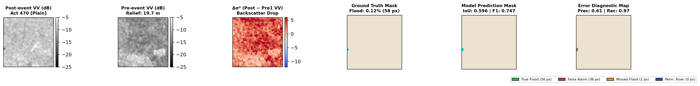
| Error Rank | Sample | Event & Terrain | Relief | Flood IoU | Flood F1 | Precision | Recall | False Alarm | Missed | True Flood |
|---|---|---|---|---|---|---|---|---|---|---|
| #1 | Sample 03 | Act 470 (Valley) | 19.7 m | 0.596 | 0.747 | 0.61 | 0.97 | +36 px | -2 px | 56 px |
| #2 | Sample 09 | Act 492 (Mountain) | 46.5 m | 0.616 | 0.762 | 0.66 | 0.91 | +969 px | -190 px | 1,858 px |
| #3 | Sample 04 | Act 470 (Valley) | 7.9 m | 0.623 | 0.767 | 0.64 | 0.96 | +2,627 px | -220 px | 4,698 px |
| #4 | Sample 11 | Act 492 (Mountain) | 19.0 m | 0.735 | 0.847 | 0.84 | 0.86 | +35 px | -31 px | 183 px |
| #5 | Sample 07 | Act 492 (Mountain) | 29.4 m | 0.778 | 0.875 | 0.85 | 0.90 | +326 px | -196 px | 1,826 px |
| #6 | Sample 10 | Act 492 (Mountain) | 38.0 m | 0.810 | 0.895 | 0.84 | 0.95 | +22 px | -6 px | 119 px |
| #7 | Sample 05 | Act 470 (Valley) | 6.8 m | 0.834 | 0.909 | 0.87 | 0.96 | +2,418 px | -721 px | 15,752 px |
| #8 | Sample 06 | Act 492 (Mountain) | 10.2 m | 0.891 | 0.942 | 0.91 | 0.97 | +2,118 px | -659 px | 22,751 px |
| #9 | Sample 00 | Act 470 (Valley) | 26.4 m | 0.908 | 0.952 | 0.98 | 0.92 | +13 px | -69 px | 810 px |
| #10 | Sample 01 | Act 470 (Valley) | 16.6 m | 0.910 | 0.953 | 0.97 | 0.94 | +697 px | -1,337 px | 20,533 px |
| #11 | Sample 08 | Act 492 (Mountain) | 31.4 m | 0.915 | 0.956 | 0.95 | 0.96 | +1,207 px | -790 px | 21,541 px |
| #12 | Sample 02 | Act 470 (Valley) | 28.5 m | 0.922 | 0.959 | 0.96 | 0.96 | +810 px | -983 px | 21,211 px |
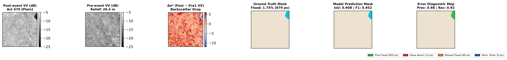
Diagnostic Key: ■ Green: True Positive (Correct Flood) | ■ Red: False Alarm (Over-prediction) | ■ Orange: Missed Flood (Under-prediction) | ■ Navy Blue: Permanent River Channel | ■ Sand/Beige: Agreed Dry Land
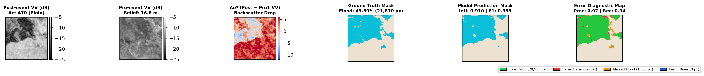
Diagnostic Key: ■ Green: True Positive (Correct Flood) | ■ Red: False Alarm (Over-prediction) | ■ Orange: Missed Flood (Under-prediction) | ■ Navy Blue: Permanent River Channel | ■ Sand/Beige: Agreed Dry Land
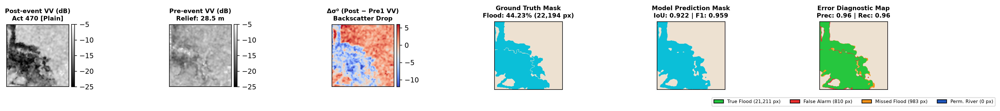
Diagnostic Key: ■ Green: True Positive (Correct Flood) | ■ Red: False Alarm (Over-prediction) | ■ Orange: Missed Flood (Under-prediction) | ■ Navy Blue: Permanent River Channel | ■ Sand/Beige: Agreed Dry Land
Diagnostic Key: ■ Green: True Positive (Correct Flood) | ■ Red: False Alarm (Over-prediction) | ■ Orange: Missed Flood (Under-prediction) | ■ Navy Blue: Permanent River Channel | ■ Sand/Beige: Agreed Dry Land
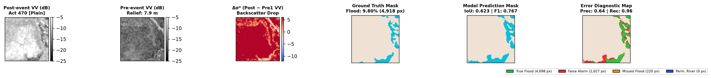
Diagnostic Key: ■ Green: True Positive (Correct Flood) | ■ Red: False Alarm (Over-prediction) | ■ Orange: Missed Flood (Under-prediction) | ■ Navy Blue: Permanent River Channel | ■ Sand/Beige: Agreed Dry Land
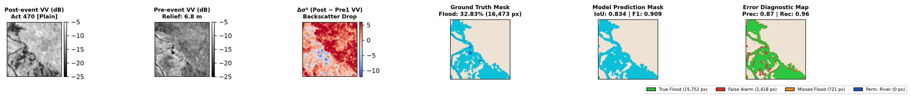
Diagnostic Key: ■ Green: True Positive (Correct Flood) | ■ Red: False Alarm (Over-prediction) | ■ Orange: Missed Flood (Under-prediction) | ■ Navy Blue: Permanent River Channel | ■ Sand/Beige: Agreed Dry Land
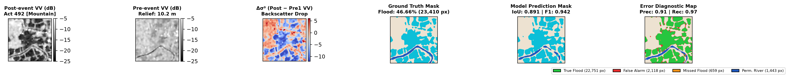
Diagnostic Key: ■ Green: True Positive (Correct Flood) | ■ Red: False Alarm (Over-prediction) | ■ Orange: Missed Flood (Under-prediction) | ■ Navy Blue: Permanent River Channel | ■ Sand/Beige: Agreed Dry Land
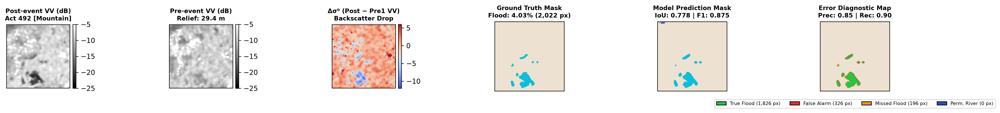
Diagnostic Key: ■ Green: True Positive (Correct Flood) | ■ Red: False Alarm (Over-prediction) | ■ Orange: Missed Flood (Under-prediction) | ■ Navy Blue: Permanent River Channel | ■ Sand/Beige: Agreed Dry Land
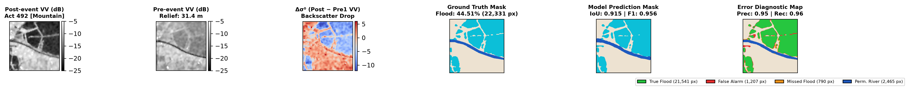
Diagnostic Key: ■ Green: True Positive (Correct Flood) | ■ Red: False Alarm (Over-prediction) | ■ Orange: Missed Flood (Under-prediction) | ■ Navy Blue: Permanent River Channel | ■ Sand/Beige: Agreed Dry Land
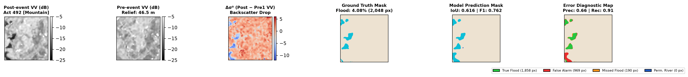
Diagnostic Key: ■ Green: True Positive (Correct Flood) | ■ Red: False Alarm (Over-prediction) | ■ Orange: Missed Flood (Under-prediction) | ■ Navy Blue: Permanent River Channel | ■ Sand/Beige: Agreed Dry Land
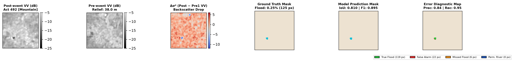
Diagnostic Key: ■ Green: True Positive (Correct Flood) | ■ Red: False Alarm (Over-prediction) | ■ Orange: Missed Flood (Under-prediction) | ■ Navy Blue: Permanent River Channel | ■ Sand/Beige: Agreed Dry Land
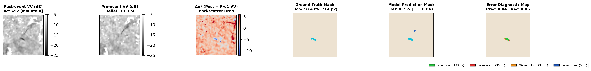
Diagnostic Key: ■ Green: True Positive (Correct Flood) | ■ Red: False Alarm (Over-prediction) | ■ Orange: Missed Flood (Under-prediction) | ■ Navy Blue: Permanent River Channel | ■ Sand/Beige: Agreed Dry Land